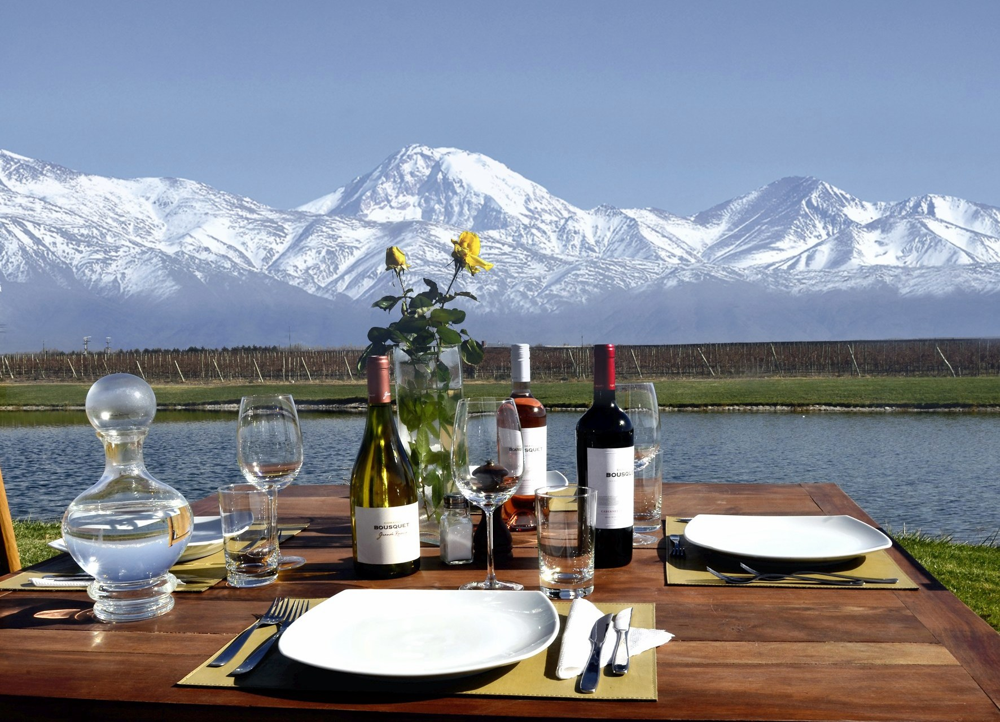
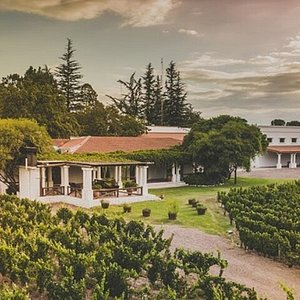
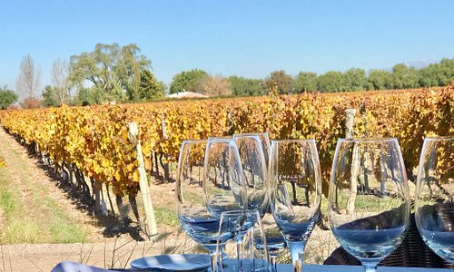

Valle de Uco
Sale desde la Ciudad de Mendoza “Capital Internacional del Vino”, para recorrer Los Caminos del Vino de Lujan de Cuyo, Maipú y Valle de Uco, y vivir la experiencia de Visitar Bodegas Abiertas al Turismo: Vistas Guiadas, Degustaciones, Ventas de Vinos-Espumantes y Gastronomía.
ReservarOlivos de Maipu
Todos los martes y viernes Sale desde la Ciudad de Mendoza “Capital Internacional del Vino”, para recorrer Los Caminos del Vino de Lujan de Cuyo, Maipú y Valle de Uco, y vivir la experiencia de Visitar Bodegas Abiertas al Turismo: Vistas Guiadas, Degustaciones, Ventas de Vinos-Espumantes y Gastronomía.
ReservarLujan de cuyo
Todos los miercoles y sabados Sale desde la Ciudad de Mendoza “Capital Internacional del Vino”, para recorrer Los Caminos del Vino de Lujan de Cuyo, Maipú y Valle de Uco, y vivir la experiencia de Visitar Bodegas Abiertas al Turismo: Vistas Guiadas, Degustaciones, Ventas de Vinos-Espumantes y Gastronomía.
Reservar